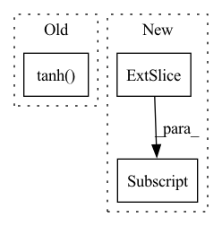

Pattern ID :5598

Before Change
out0, out1 = torch.nn.functional.linear(torch.cat([out, sequence_input], 1),
linear_param,
None).chunk(2, 1)
return torch.sigmoid(out0) * out1.tanh()
@staticmethod
def _calc(fn_input, sequence_input, linear_param, depth):
out = fn_input
After Change
out = fn_input - fn_input.mean(dim=0, keepdim=True)
features = out.size(1)
out = torch.mm(out, linear_param[:features]) + torch.mm(sequence_input, linear_param[features:])
return torch.nn.functional.relu6(out[:, :features]) * out[:, features:].tanh()
@staticmethod
def _calc(fn_input, sequence_input, linear_param, depth):
In pattern: SUPERPATTERN
Frequency: 3
Non-data size: 3
Instances
Fragment ID: 19724776
Project Name: homebrewnlp/homebrewnlp
Commit Name: 2c4b92319ccca8f3a6f7c2677b9f0fbf88f7b8db
Time: 2020-08-05
Author: 39779310+ClashLuke@users.noreply.github.com
File Name: module.py
M Class Name: ReversibleRNNFunction
N Class Name: ReversibleRNNFunction
M Method Name: _single_calc(3)
N Method Name: _single_calc(3)
M Parent Class: torch.autograd.Function
N Parent Class: torch.autograd.Function
M File Name: module.py
N File Name: module.py
M Start Line: 8
M End Line: 12
N Start Line: 7
N End Line: 10
'>
Before Change
if self.add_nl_layer:
insample_y = self.MLPW(insample_y)
insample_y = torch.tanh(insample_y)
insample_y = self.adapterW(insample_y)
return insample_y
After Change
encoder_input = output
if self.futr_exog_size > 0:
futr_exog = futr_exog.permute(0,2,3,1)[:,:,1:,:] // [B, F, seq_len, 1+H] -> [B, seq_len, H, F]
encoder_input = torch.cat(( encoder_input, futr_exog.reshape(batch_size, seq_len, -1)), dim=2)
// Context adapter
'>
Fragment ID: 19724778
Project Name: nixtla/neuralforecast
Commit Name: 9cdb8c8ddd592a3acd47aa982f42bf995092e049
Time: 2022-11-04
Author: mergenthaler.m@gmail.com
File Name: neuralforecast/models/dilated_rnn.py
M Class Name: DilatedRNN
N Class Name: DilatedRNN
M Method Name: forward(2)
N Method Name: forward(2)
M Parent Class: BaseRecurrent
N Parent Class: BaseRecurrent
M File Name: neuralforecast/models/dilated_rnn.py
N File Name: neuralforecast/models/dilated_rnn.py
M Start Line: 325
M End Line: 359
N Start Line: 367
N End Line: 407
'>
Before Change
// Write Process
et = torch.sigmoid(self.e_layer(vt))
Mvt = Mvt * (1 - (wt.unsqueeze(-1) * et.unsqueeze(1)))
at = torch.tanh(self.a_layer(vt))
Mvt = Mvt + (wt.unsqueeze(-1) * at.unsqueeze(1))
p.append(pt)
Mv.append(Mvt)
After Change
self.f_layer(
torch.cat(
[
(w.unsqueeze(-1) * Mv[:, :-1]).sum(-2),
k
],
dim=-1
'>
Fragment ID: 19724779
Project Name: hcnoh/knowledge-tracing-collection-pytorch
Commit Name: c42b01b83dbe54e94f4294009fbfe8bd910e3638
Time: 2021-10-06
Author: rhc0624@gmail.com
File Name: models/dkvmn.py
M Class Name: DKVMN
N Class Name: DKVMN
M Method Name: forward(3)
N Method Name: forward(3)
M Parent Class: Module
N Parent Class: Module
M File Name: models/dkvmn.py
N File Name: models/dkvmn.py
M Start Line: 40
M End Line: 66
N Start Line: 50
N End Line: 87